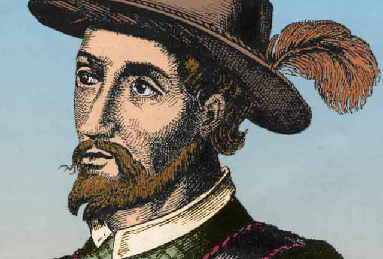
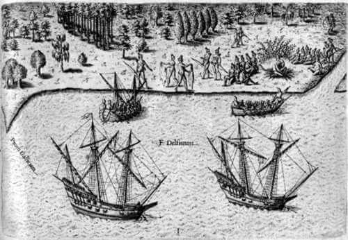

Биография
Ярый путешественник, авантюрист, военный губернатор Испанской короны
Испанский конкистадор, который основал первое европейское поселение на Пуэрто-Рико и во время поисков источника вечной молодости обнаружил в 1513 г. Флориду.
Родился в семье вальядолидского дворянина, служил пажем при королевском дворе, затем участвовал в освобождении Гранады от мавров. Не исключено, что в 1493 г. он сопровождал Колумба во время его плавания к берегам новооткрытой Америки. В 1503 г. появляется в Вест-Индии как капитан под началом губернатора Николаса де Овандо.
В награду за подавление индейских волнений Понсе де Леон был назначен Овандо наместником восточной части острова Эспаньола. Когда до него стали доходить слухи о том, что остров Пуэрто-Рико богат золотом, Понсе де Леон снарядил туда экспедицию, которая в 1508-09 гг. исследовала территорию острова и основала поселение Капарра, жители которого позднее дали начало городу Сан-Хуан, нынешней столице Пуэрто-Рико.
Экспедиции во Флориду
По возвращении на Эспаньолу Понсе де Леон получил назначение губернатором Пуэрто-Рико, что вызвало зависть недругов, которые вскоре добились его отстранения от дел. Неутомимый конкистадор путём расспроса индейцев узнал о существовании чудодейственного источника вечной молодости на острове Бимини, лежащем к северу от Пуэрто-Рико. В марте 1513 г. он на собственные деньги собрал экспедицию и отплыл из Пуэрто-Рико на поиски Чудо-источника.
В апреле 1513 г. Понсе де Леон увидел землю и высадился на восточном берегу Флориды близ современного Сент-Огастина. Он принял эту землю за остров и нарёк его Флоридой за роскошную тропическую флору, а также из-за того, что открытие «цветущей земли» пришлось на пасхальную неделю (Pascua Florida). Он обогнул Флориду с юга и, пройдя вдоль западного побережья полуострова, вернулся сначала на Пуэрто-Рико, а затем в Испанию, где в 1514 г. получил назначение военным губернатором Бимини и Флориды.
В 1521 г. Понсе де Леон на двух кораблях отправился на колонизацию Флориды. Его отряд из 200 человек высадился на западном берегу и вступил в истребительную войну с семинолами. Понсе де Леон был ранен отравленной стрелой и умер во время морского перехода на Кубу. Похоронен в Сан-Хуане. Его имя носит третий по величине город Пуэрто-Рико — Понсе. Сын Понсе де Леона, Хуан II, в 1579 г. временно управлял Пуэрто-Рико, а в 1581 г. составил письменное описание Вест-Индии.